專案背景
Open HCI 是一個由學生自治籌備的人機互動工作坊，宗旨是推廣人機互動學門，每年由不同學校的學生團隊接力籌辦。這次是第十六屆，主題訂為「(AI)dentity」——回應近年 AI 生成工具快速普及後，創作者與 AI 之間的界線越來越模糊的現象。我負責這屆的主視覺、標準字、動態影像與社群 Banner 設計，並與視覺部、網管部的夥伴協力製作活動網站。
設計概念
我們把「身份」重新定義為一個持續被判讀與生成的過程，而不是固定不變的東西。因此整套視覺以「細胞」、「框選」與「glitch（錯位）」三個元素為核心語彙：細胞代表持續分裂、增生、不斷變動的身份樣態；框選標記（像是介面上常見的偵測框、標籤 ??）呼應 AI 辨識與判讀的視角；glitch 錯位則模擬辨識失準、誤判的瞬間。三者疊加在一起，呈現出身份在「判讀、誤判、重構」之間持續流動的狀態，也呼應了創作者與 AI 共同生成內容時，界線逐漸模糊的處境。
標準字設計
主標準字「(AI)dentity」是整套視覺最核心的資產，我把它拆成三個部分處理，讓字體本身就在說故事。
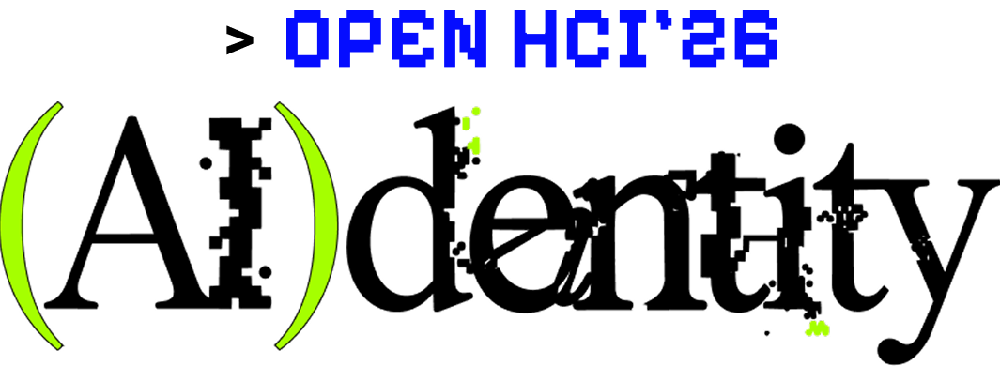
- (AI)以螢光綠括號框住「AI」，呼應框選、偵測的視覺語彙；括號內的「I」刻意置入像素化的雜訊紋理，模擬機器辨識畫面局部失準、重構的瞬間。
- dentity接續使用經典襯線體，維持人類手寫般的溫度，但在筆畫交界處加入細微的錯位與斷裂，暗示這個「人」的身份也正被悄悄地改寫。
- > OPEN HCI'26頂部以電光藍的像素／等寬字體呈現，模仿終端機指令列的樣式，強化整體視覺與「AI、程式」之間的連結。
除了主色版本，我也整理了單色與線稿版的標準字，方便在印刷物、單色物件或需要去背使用的情境下維持一致的識別度。
設計系統
色彩與字體都直接取自標準字本身，確保從主視覺、動態影像到社群 Banner 都維持一致的識別度。
?? 標籤模擬 AI 辨識介面，呼應「判讀」的主題。動態影像
除了平面視覺，我也負責製作活動的動態影像，把「細胞增生」與「glitch 錯位」的概念延伸成會呼吸、會變動的畫面，用在活動的宣傳與開場。
網站與社群
視覺確立後，我與視覺部、網管部的夥伴協力把它落地到社群 Banner 與活動網站上，我主要負責動畫設計、版面調整與活動報名區塊的規劃製作，確保整套識別在不同平台上都維持一致的辨識度。
識別證、指引與印刷物
我也把整套識別延伸到現場會用到的物件上，維持視覺一致性。
識別證與麥克風牌
依身份設計了幹部、學員、講師三種識別證，加上給舞台講者使用的麥克風牌。
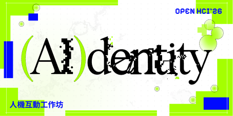
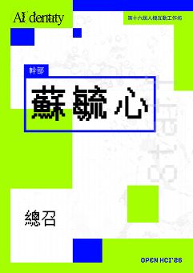
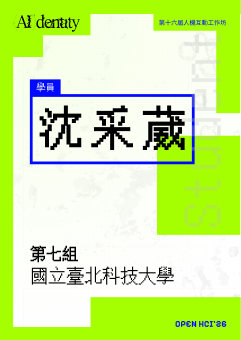
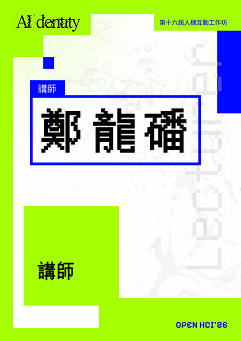
現場指引
用同樣的圖形語彙延伸成樓層指引、方向與空間標示，讓學員能快速找到路。
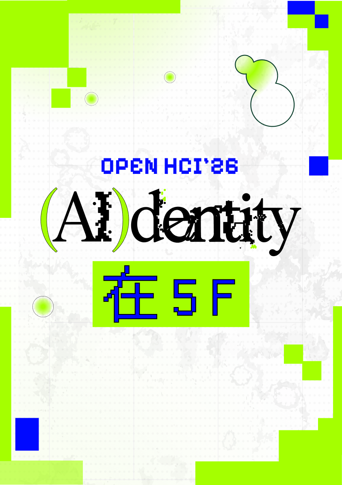
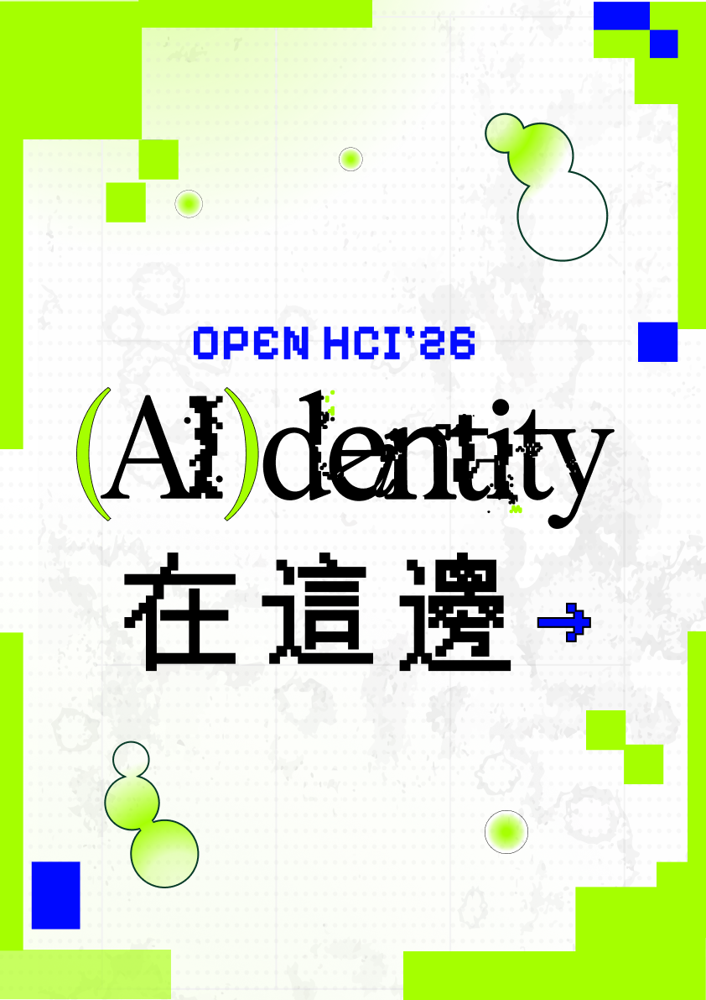
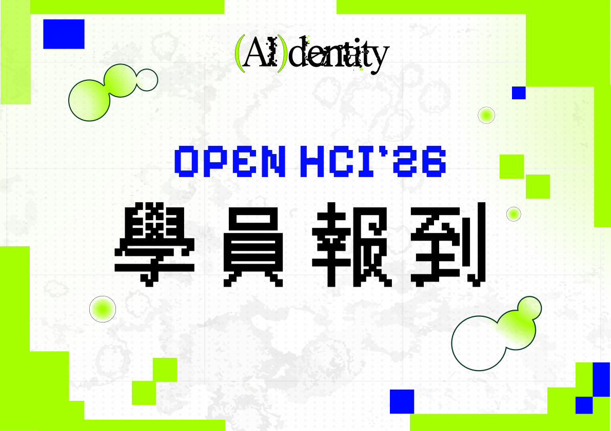
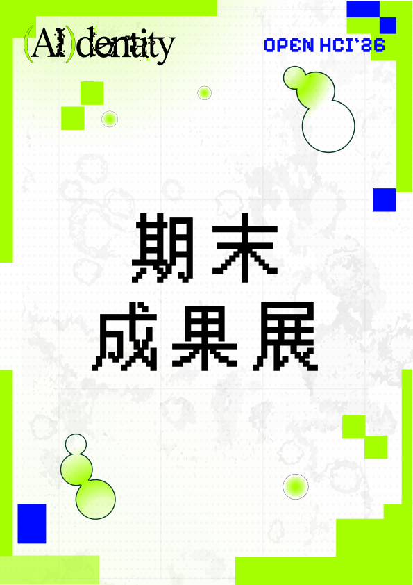
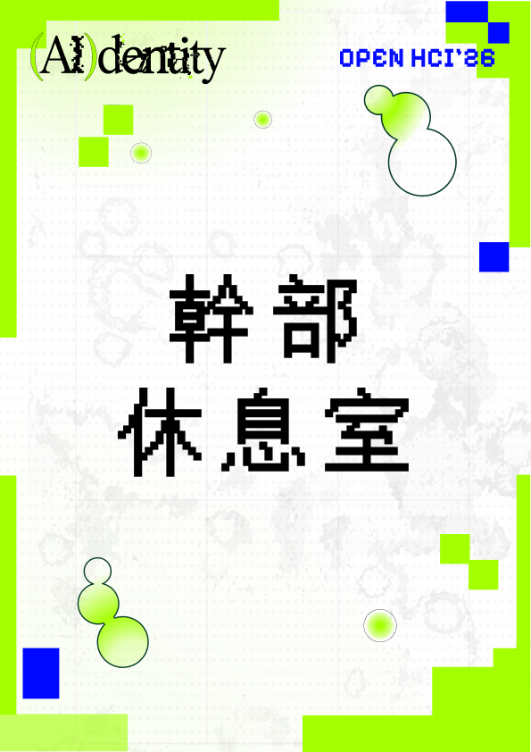
印刷物
議程海報整理四天完整時間軸，投票根則用在期末成果展的投票環節。
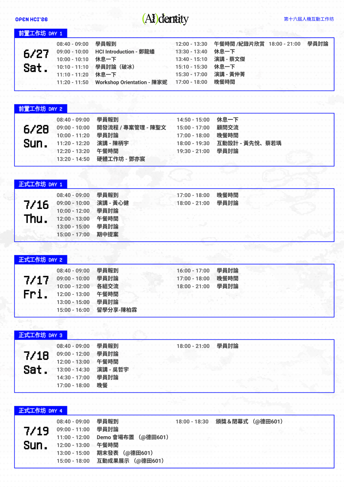
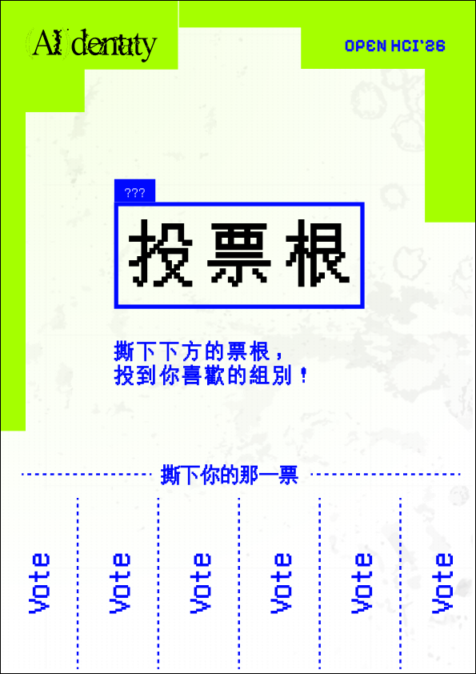
紀念品設計
我也設計了給學員的紀念品：雲朵造型與圓形造型的壓克力吊飾各一款，以及包裝用的夾鏈袋，讓整套視覺延伸到參加者能實際帶走的物件上。
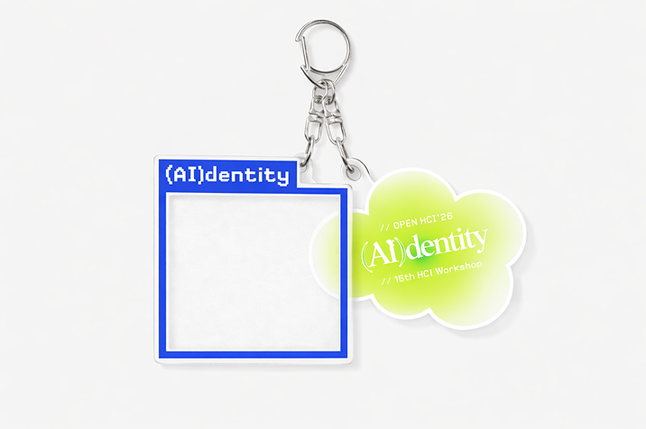
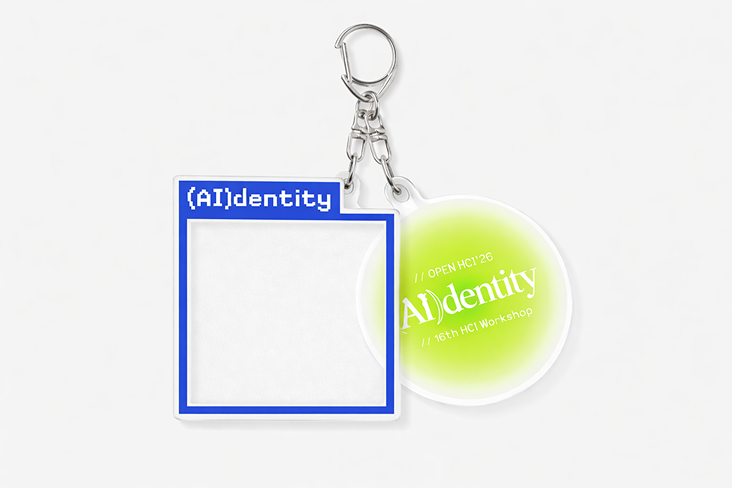
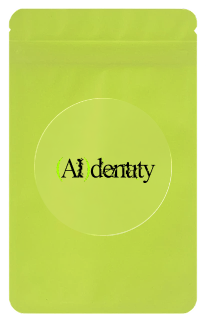
花絮合照
這次工作坊不只留下與系上夥伴們認真奮鬥的回憶，也讓我認識了很多很厲害的夥伴，留下幾張活動花絮作紀念。
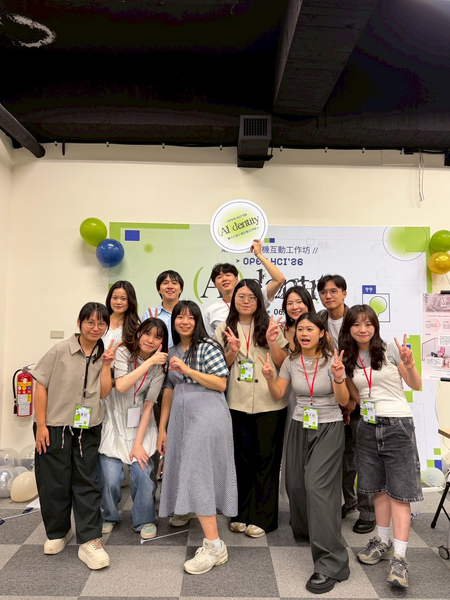
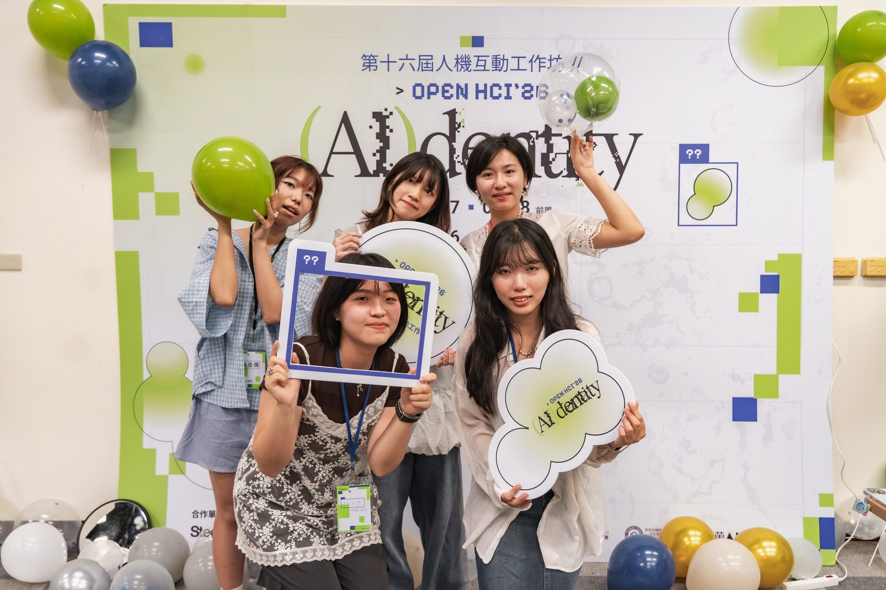
心得與反思
-
一個概念，要能延伸到每一個接觸點
這是我第一次負責一整套視覺識別，從標準字、平面主視覺、動態影像到社群 Banner 與網站，都要維持同一套語彙。過程中我不斷提醒自己：不是每個畫面都要塞進所有元素，而是要抓住細胞、框選、glitch 這三個核心語彙，讓它們在不同載體上以不同比例出現，整體才會像同一套系統，而不是拼貼。
-
跨部門協作，設計要能被別人接手
網站需要和視覺部、網管部的夥伴一起完成，這讓我學會把設計系統整理得更清楚，包含色彩、字體與圖形元素的使用邏輯，讓夥伴在製作動畫與網站版面時，可以在不偏離主視覺的前提下自行延伸，而不是每個細節都要來回確認。